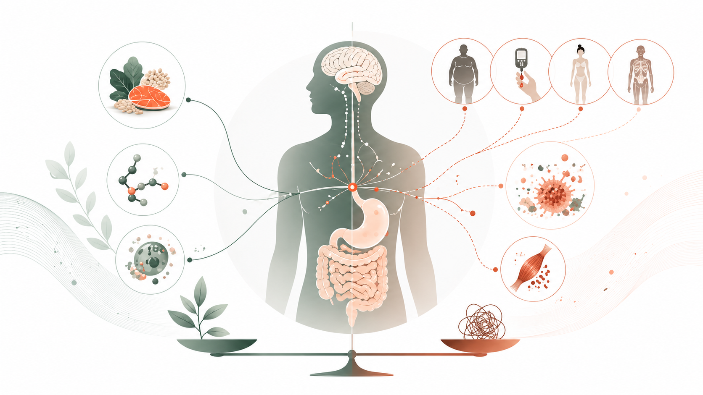

Long-term vision
Understand when appetite is adaptive and when it becomes maladaptive.
We are especially interested in obesity, diabetes, anorexia, and cachexia-related conditions where appetite and metabolism become uncoupled.
Questions we want to answer next
- How do metabolic signals reshape nutrient-specific setpoints?
- Which firing patterns encode flexible versus fixed need states?
- How do tumor-derived factors disrupt protein homeostasis?
- Can restoring setpoint control improve health outcomes?